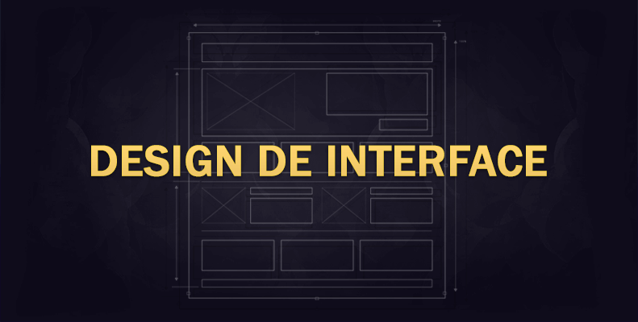

Sobre o Site
Este é um site que conterá os trabalhos da disciplina de Interação Web. Ao longo do semestre, os demais trabalhos da disciplina serão adicionados a este site.

Este é um site que conterá os trabalhos da disciplina de Interação Web. Ao longo do semestre, os demais trabalhos da disciplina serão adicionados a este site.
